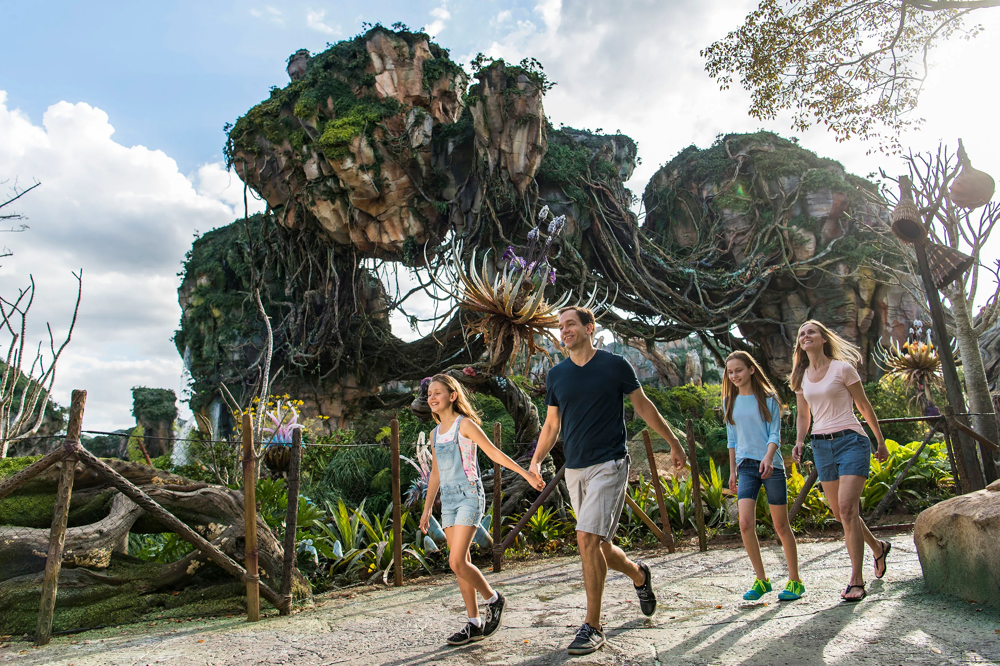

Animal Kingdom
Publicado el 20 de Mayo, 2025

Animal Kingdom es una mezcla fascinante entre parque temático y zoológico, donde la naturaleza y la aventura se combinan para ofrecer una experiencia única. Acá podés disfrutar de safaris en vehículos que recorren reservas con animales en hábitats muy cuidados, como elefantes, leones y jirafas.
Una de las áreas más impresionantes es Pandora – The World of Avatar, donde los visitantes pueden caminar entre montañas flotantes y bioluminiscencia, además de subirse al famoso simulador Flight of Passage. También destacan los safaris de Kilimanjaro Safaris, donde podés ver animales como elefantes, leones y rinocerontes en un entorno natural.
Animal Kingdom también es hogar de Expedition Everest, una montaña rusa con un encuentro con el legendario Yeti, y de espectáculos increíbles como Festival of the Lion King y Finding Nemo: The Big Blue... and Beyond!.
El parque se destaca por su compromiso con la conservación, ofreciendo experiencias educativas e interactivas para aprender sobre la vida silvestre. Es un destino imperdible para los amantes de la naturaleza y la aventura.
🎢 Atracciones imperdibles
Flight of Passage: Simulador 3D en el mundo de Avatar, volando sobre un banshee.

Expedition Everest: Montaña rusa emocionante por el Himalaya con encuentros con el Yeti.
Kilimanjaro Safaris: Safari por la sabana africana con animales reales en su hábitat.
📹 Video recomendado: Recorrido por Pandora
🎟️ Datos útiles
- 📍 Ubicación: Orlando, Florida
- 🕒 Horarios: Todos los días de 8:00 a 20:00 hs
- 🦁 Shows recomendados: Festival of the Lion King, Finding Nemo: The Big Blue and Beyond
- 💳 Tip: Visitá temprano para ver más animales activos y aprovechá Lightning Lane para Flight of Passage
← Volver al inicioAnimal Kingdom es una experiencia salvaje y mágica, ideal para quienes aman los animales, los paisajes naturales y la emoción de las grandes aventuras.